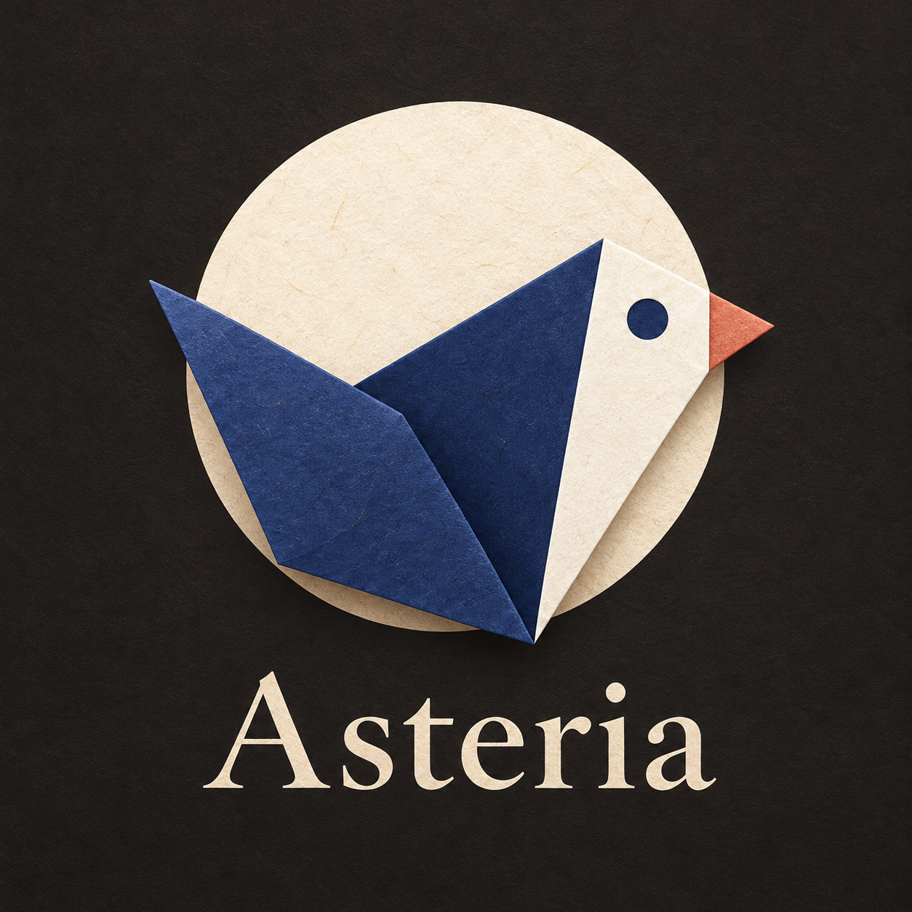
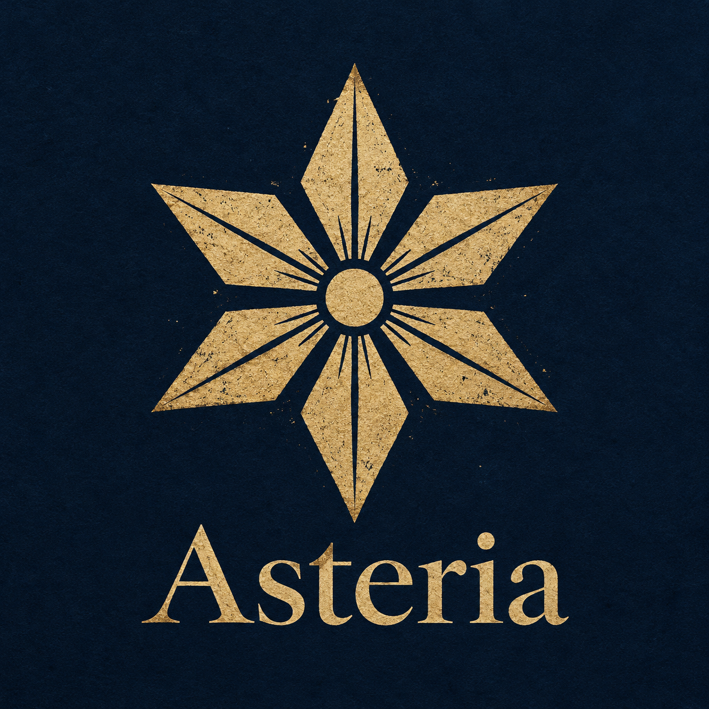
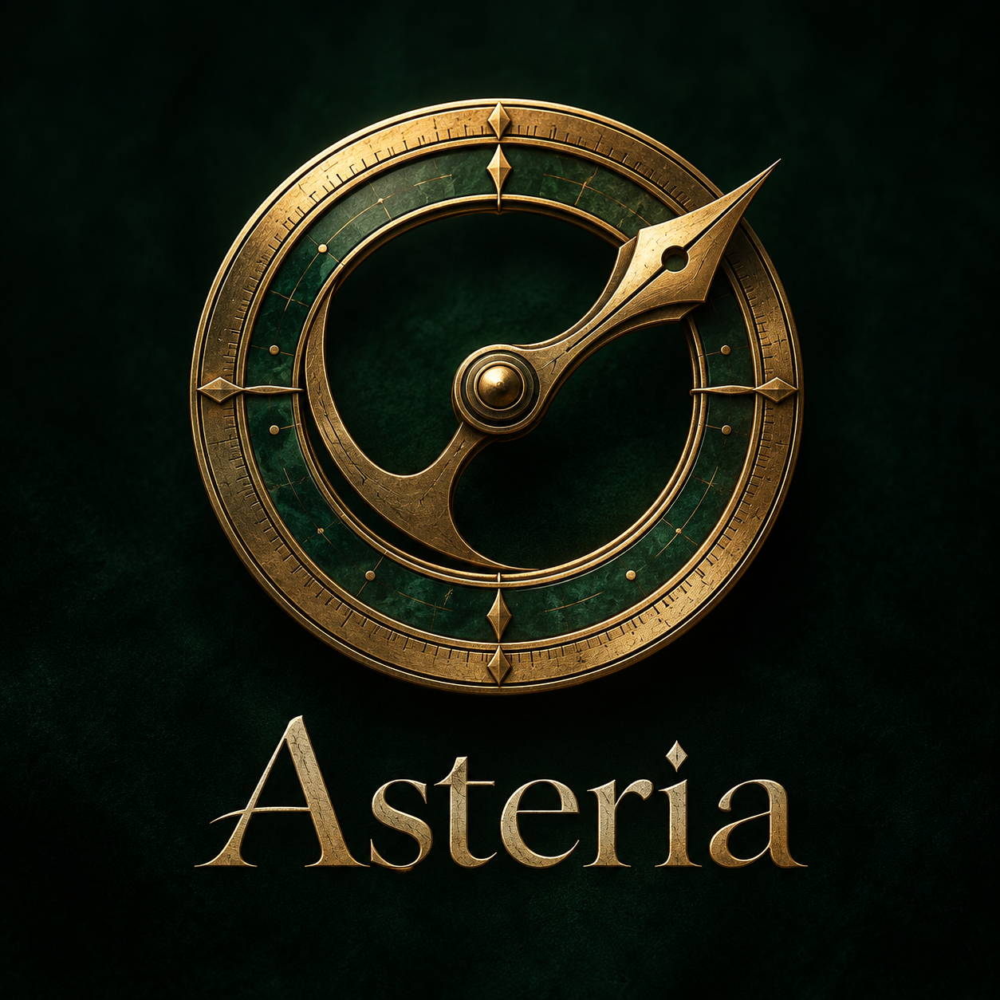
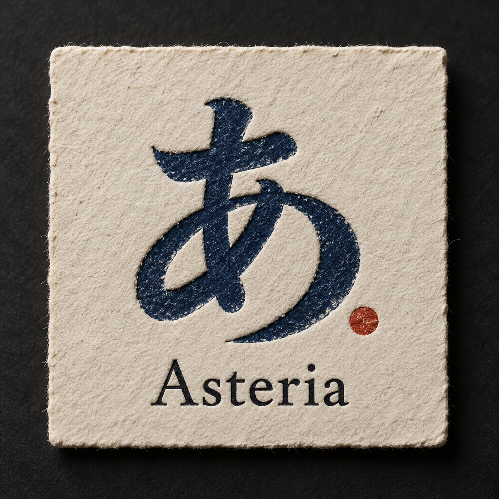
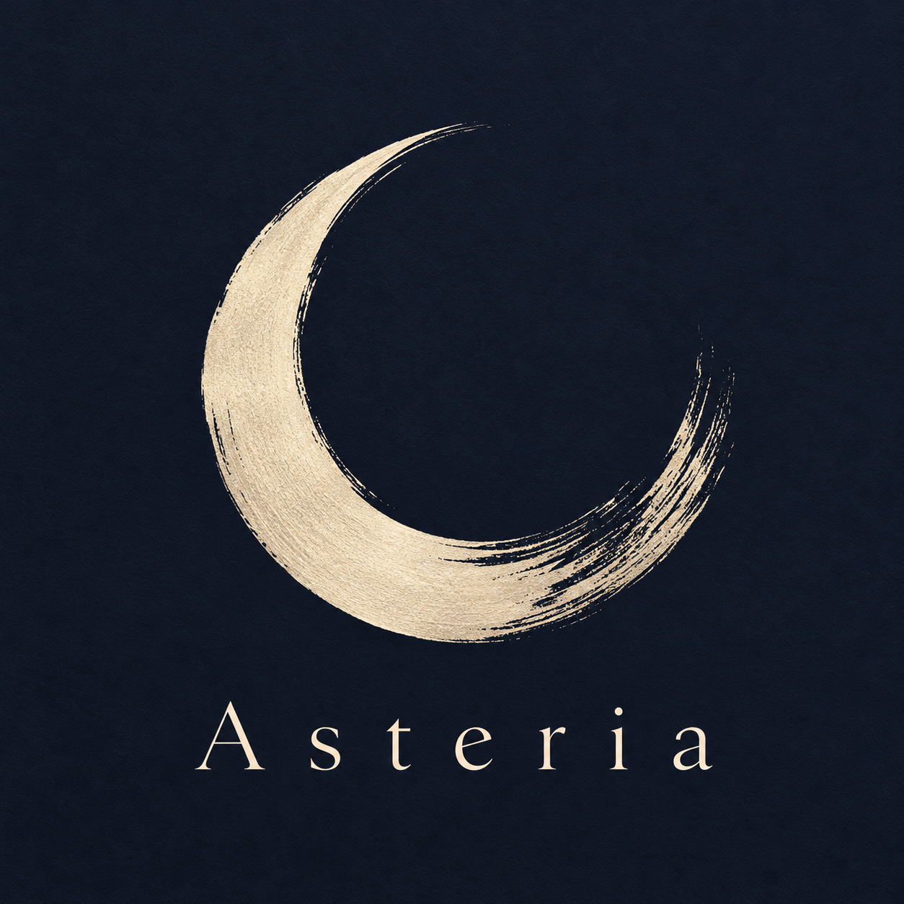
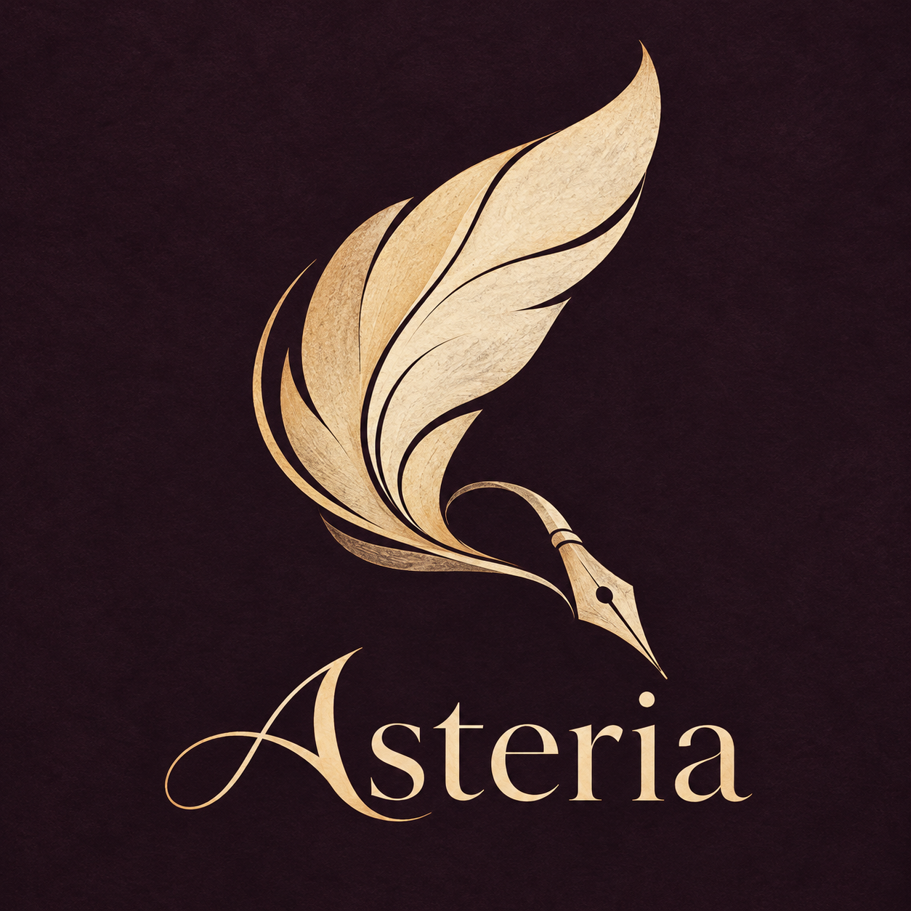
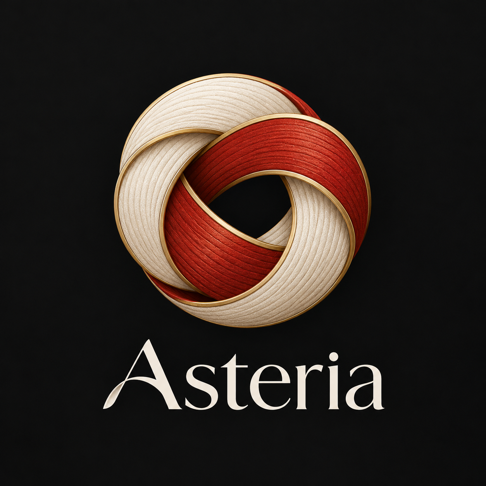
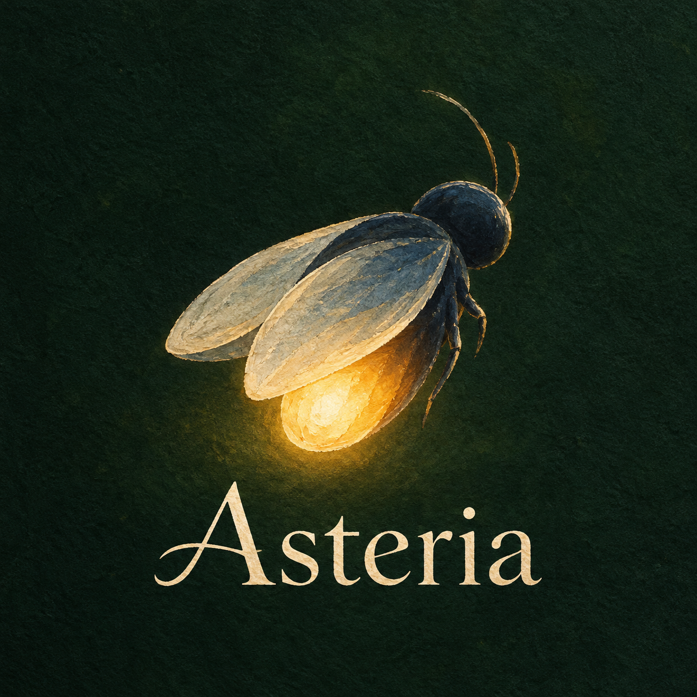
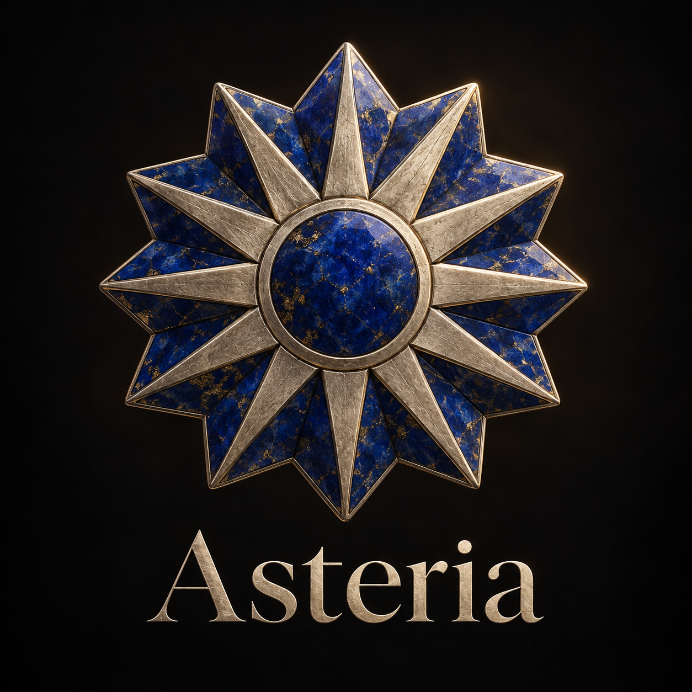
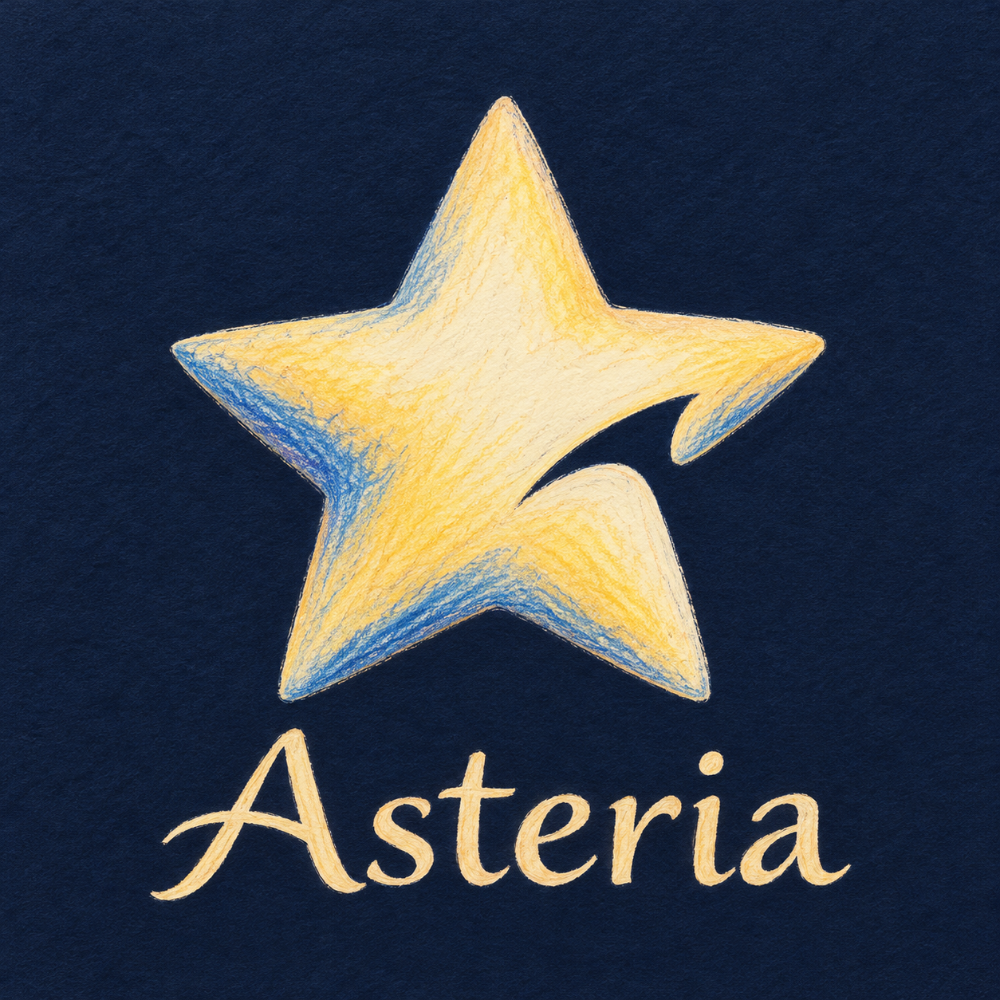

アステリアの印象を、モチーフと画風から見つける。画像を押すと拡大できます。気になる案は「候補にする」で並べて比較。
星 3案 ／ 星以外 7案全10案・比較用コンセプト

Kotoriの親しみを継承。紙の折り目と夜の静けさ。

六方向の星を木版で。天体図の古典的な佇まい。

真鍮と濃緑の天測器。精密な道具としての存在感。

日本語の「あ」を活版に。言葉を扱う製品と直結。

墨のかすれを残した月。静かで余白のある印象。

羽根からペン先へ。文学的で流れるような輪郭。

紅白の結び。言葉をつなぐ、日本の工芸の発想。

夜の蛍をガッシュで。温かさと小さな灯り。

瑠璃と金属の多角星。古い観測所の徽章のような質感。

色鉛筆の五角星。絵本のような手の温もり。